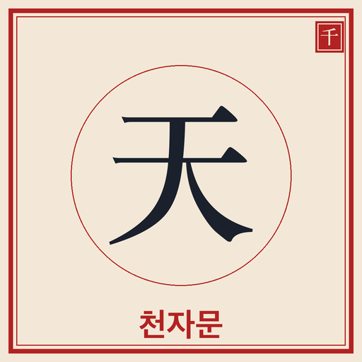
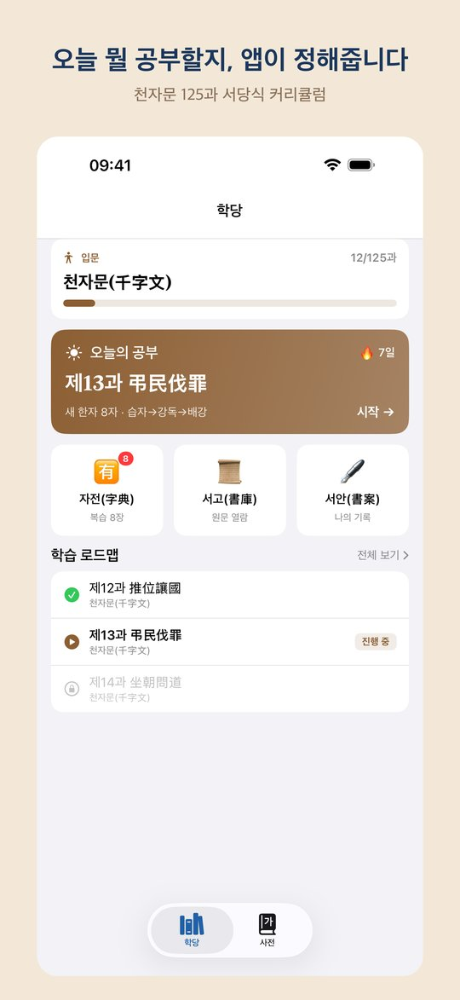
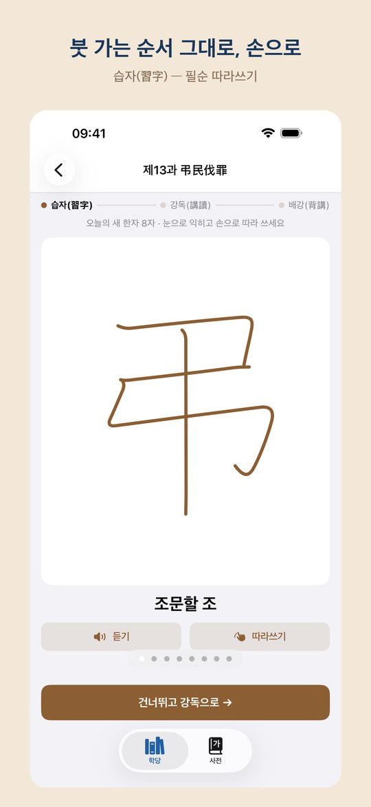
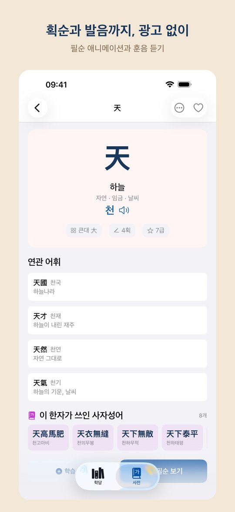
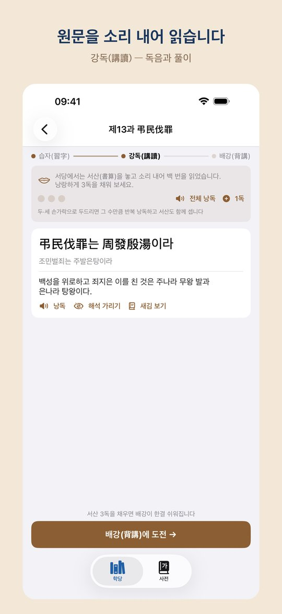

조선 서당의 방식 그대로 — 천자문 1,000자를 125과로, 광고 없이 전부 무료 The classical seodang method — master all 1,000 characters of Cheonjamun in 125 lessons, completely free with no ads
천자문 1,000자를 125과로 나누어 하루 8자씩 차례로 뗍니다. 구절마다 원문, 독음, 풀이가 함께합니다. Master Cheonjamun's 1,000 characters in 125 lessons, 8 a day — every passage comes with the original text, reading, and translation.
필순 따라쓰기로 익히고, 서산을 놓고 소리 내어 읽고, 마지막에 외워 말하는 전통 세 걸음 학습. The traditional three steps: trace each stroke, read aloud with a tally, then recite from memory.
배운 한자를 잊을 때쯤 플래시카드와 퀴즈로 다시 묻습니다. Flashcards and quizzes resurface each character right before you forget it.
글자마다 획이 그려지는 순서를 애니메이션으로 보여줍니다. 훈음, 부수, 획수, 급수 정보 포함. Watch every character drawn stroke by stroke, with readings, radicals, stroke counts, and levels.
책이나 간판의 한자를 카메라로 비추어 찾고, 모르는 글자는 손으로 그려서 찾습니다. 모두 기기 안에서 처리됩니다. Point your camera at printed hanja or draw a character by hand — all recognized on-device.
결제도 광고도 로그인도 없습니다. 데이터를 수집하지 않으며 인터넷 없이 모든 기능이 동작합니다. No purchases, no ads, no sign-in. No data collection, and everything works without internet.



